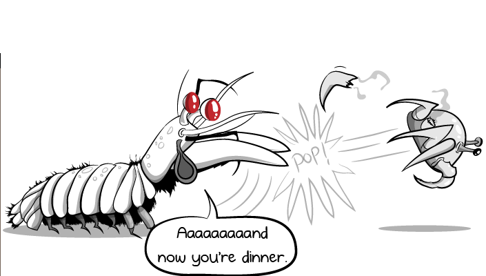

Fatos sobre o Stomatopoda
| Reino | Filo | Subfilo | Classe | Subclasse | Ordem |
|---|---|---|---|---|---|
| Animalia | Arthropoda | Crustacea | Malacostraca | Hoplocarida | Stomatopoda |
A visão deste camarão
Os crustáceos estomatópodes (camarões mantis) possuem um sistema visual incrivelmente complexo, composto por olhos compostos que contêm mais tipos de fotorreceptores do que em qualquer outro animal conhecido. O arsenal óptico do olho do camarão mantis inclui capacidade de localização monocular, visão de cores de 12 canais, detecção de polarização linear de 2 canais e, em algumas espécies, a capacidade de detectar e analisar luz polarizada circularmente. Subjacente a esse conjunto incomparável de capacidades funcionais está uma diversificação estrutural de uma unidade fotorreceptiva básica comum a todos os olhos compostos, o omatídio. A seguir, as proezas visuais do camarão mantis são descritas no contexto das variações do design e da distribuição de seus omatídios.

Animal com soco mais forte
Dentre as 400 espécies de estomatópodes (crustáceos marinhos), o ‘Odontodactylus scyllarus’ é o que desfere o golpe mais poderoso: seu soco chega a 80 quilômetros por hora, uma aceleração semelhante a um disparo de uma arma calibre 22. Com uma pressão resultante de 60 quilos por centímetro quadrado, essa lagosta consegue facilmente quebrar a carapaça de um caranguejo ou até mesmo o vidro de um aquário. Por isso é interessante não mantê-la em um.
Fontes bibliográficas
ambientalistasemrede.wordpress.comtheoatmeal
imprensa aberta abc news
wikipedia